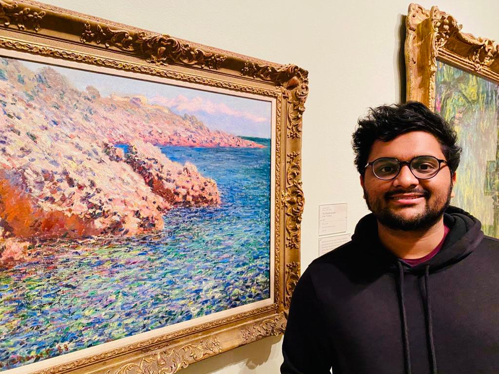

ABOUT ME.
Taken here and standing in front of this painting
_by_Claude_Monet,_Columbus_Museum_of_Art_.JPG){kind=link}
Who's Swami Venkat?
Swaminathan Venkateswaran, or Swami Venkat, is a first-year graduate student at Georgetown University studying Data Science & Analytics.
He is someone who enjoys connecting the dots be it ideas from dissimilar fields, people from different teams, or applications in divergent sectors. He has a well-equipped technical background, studying computer science and engineering in his undergrad at Vellore Institute of Technology (VIT). He is also well versed in business acumen, serving as the Vice President of Marketing & Publicity (2019) in VIT’s entrepreneurship club, where he was tasked with leading a team of ~30 students while working with a wide variety of startups to develop product and marketing plans.
His passion, simply put, lies in levering data to help solve business-related problems. He is able to jump across verticals, tailor structured algorithms, and communicate composite designs to deliver high-efficient [AI] solutions.
His other interests include writing for his art blog, listening to music, and playing the mridangam.